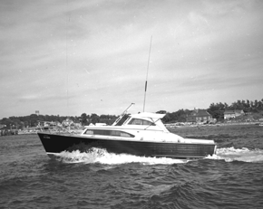

|  copyright - WHOI |
|
Donated to WHOI by John A. Dietze in 1960. Sabrina was used for
migratory game fishing studies. Later in 1960 she was sold to a private
owner.
SABRINA 1960
Donated to WHOI by John A. Dietze in 1960. Sabrina was used for
migratory game fishing studies. Later in 1960 she was sold to a private
owner.
|